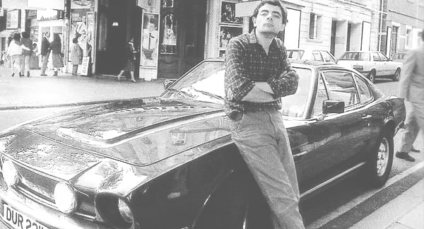

"To be successful you don’t need a beautiful face and heroic body, what you need is skillful mind and ability to perform."
Rowan Sebastian Atkinson is an English actor, comedian, and writer. He is best known for his work on the sitcoms Blackadder and Mr. Bean. Atkinson gained a master's degree in Electrical Engineering from The Queen's College, Oxford, before pursuing comedy. His iconic character, Mr. Bean, became a worldwide phenomenon, combining physical comedy and silent-film style.
Apart from acting, Atkinson is also known for his love for cars and has even written for car magazines. His performances are loved by people across generations for their wit, timing, and universal appeal.